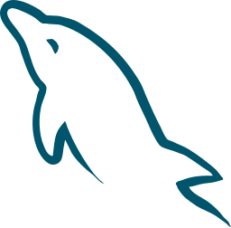
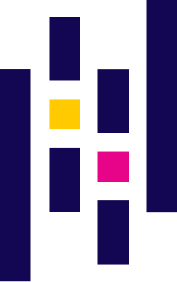
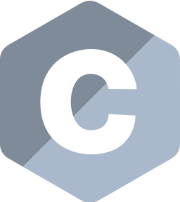
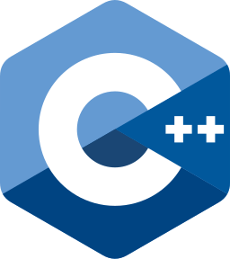
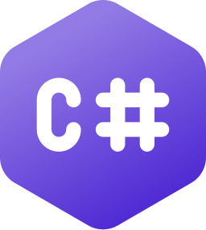
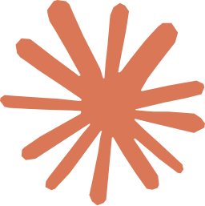
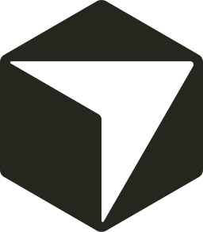
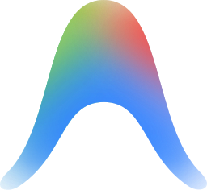

Excel · Power BI
Analysis and visualisation: PivotTables, lookup functions, statistical comparisons, and communicating the findings.
Computer Science student, Data & AI Analyst, and former Israeli Air Force communications officer. I connect technical work with the decisions it needs to support.
A short look at each one. Open a project for the full analysis, the original slides and the source files.
Two investment strategies, conservative and aggressive, built from 3,725 film records and weighed on return against risk.
Read the case studyJoined two SQL tables into one clean dataset, then measured which categories drive revenue and whether promotions raise spend.
Read the case studyA Python data pipeline comparing AI models, and free versus paid plans, with every claim linked to its source.
Read the case studyLoading the tool's data…
Before studying data, I worked where technology had to support real decisions. In the Israeli Air Force I led teams, ran critical communications and computing systems, and worked with engineering teams to deliver them.
As an ICT officer I reviewed incident data to find recurring problems and the units that needed more attention, then built work plans around those findings and checked the incident volumes that followed.
Today I study Computer Science at HIT, and I've completed the Data & AI Analyst Program at the Hebrew University.
Designed and coordinated communication plans for complex operations with engineering teams and partner units.
Led teams supporting 24/7 computing, networking and communications. Turned incident patterns into targeted work plans.
Founded a department supporting F-35 integration: servers, virtual machines, networks and mission support systems, with international teams.
Grouped by what each one does in an analysis, from the first query to the final slide.
Analysis and visualisation: PivotTables, lookup functions, statistical comparisons, and communicating the findings.


Working with data: joining and cleaning tables in MySQL, analysing them with pandas, and collecting and validating data from APIs in Python.



Programming foundations from Computer Science at HIT: coursework in programming, data structures and algorithms.



Claude, ChatGPT, Cursor and Antigravity are part of my daily workflow for coding, analysis and research, and the subject of my AI tool comparison project.
I'm looking for a student position where I can contribute, learn from a team and work on real problems.
David198221@gmail.com